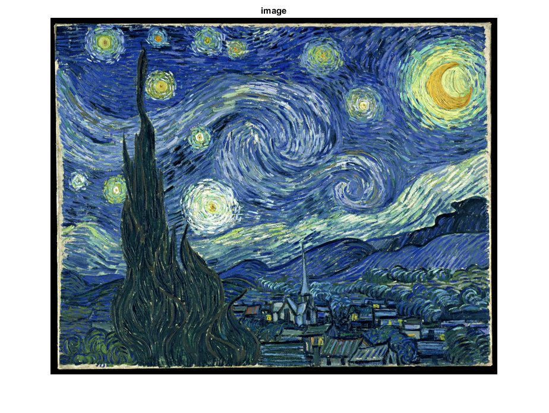
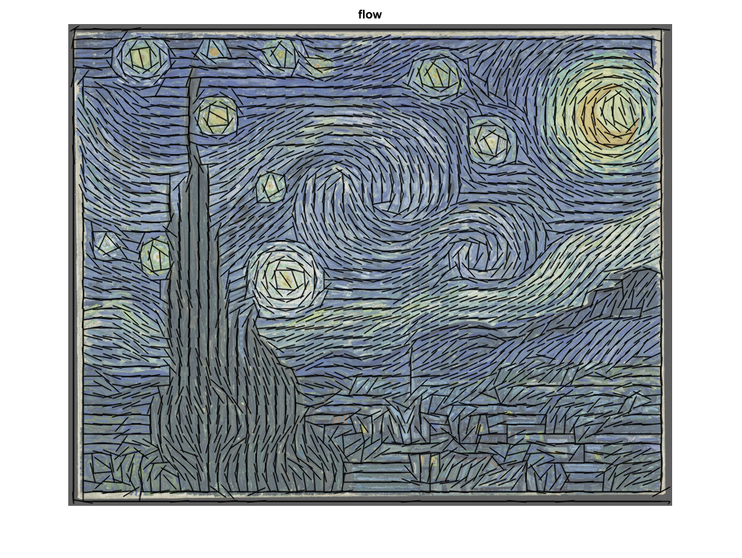
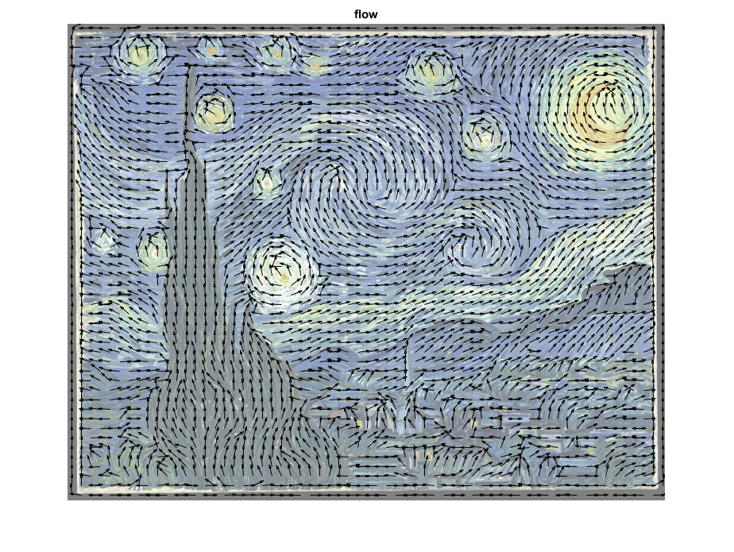

Texture flow direction estimation
Sample shows how cv.cornerEigenValsAndVecs function can be used to estimate image texture flow direction.
Sources:
load image
fname = fullfile(mexopencv.root(), 'test', 'starry_night.jpg'); if exist(fname, 'file') ~= 2 disp('Downloading image...') url = 'https://cdn.rawgit.com/opencv/opencv/3.2.0/samples/data/starry_night.jpg'; urlwrite(url, fname); end img = imread(fname); imshow(img), title('image')
convert to grayscale
gray = cv.cvtColor(img, 'RGB2GRAY');compute eigenvectors of the covariance matrix of derivatives
eigen = cv.cornerEigenValsAndVecs(gray, 'BlockSize',15, 'KSize',3); F = eigen(:,:,5:6); % flow = x2/y2 eigenvectors of lambda_2
draw flow vectors on brightened image
d = 12; [X, Y] = meshgrid(d/2:d:size(img,2), d/2:d:size(img,1)); VX = F(Y(:,1), X(1,:), 1) * d; VY = F(Y(:,1), X(1,:), 2) * d; if true vis = cv.convertTo(img, 'Alpha',0.5, 'Beta',192/2); elseif true vis = cv.convertScaleAbs(img, 'Alpha',0.5, 'Beta',192/2); else vis = cv.addWeighted(img,0.5, 192,0.5, 0); end vis = cv.line(vis, [X(:) Y(:)] - [VX(:) VY(:)], ... [X(:) Y(:)] + [VX(:) VY(:)], 'Color',[0 0 0], 'LineType','AA'); imshow(vis), title('flow')
another way to visualize flow
figure, imshow(img) if ~mexopencv.isOctave() alpha(0.5) end hold on, quiver(X, Y, VX, VY, 'Color','k'), hold off title('flow')